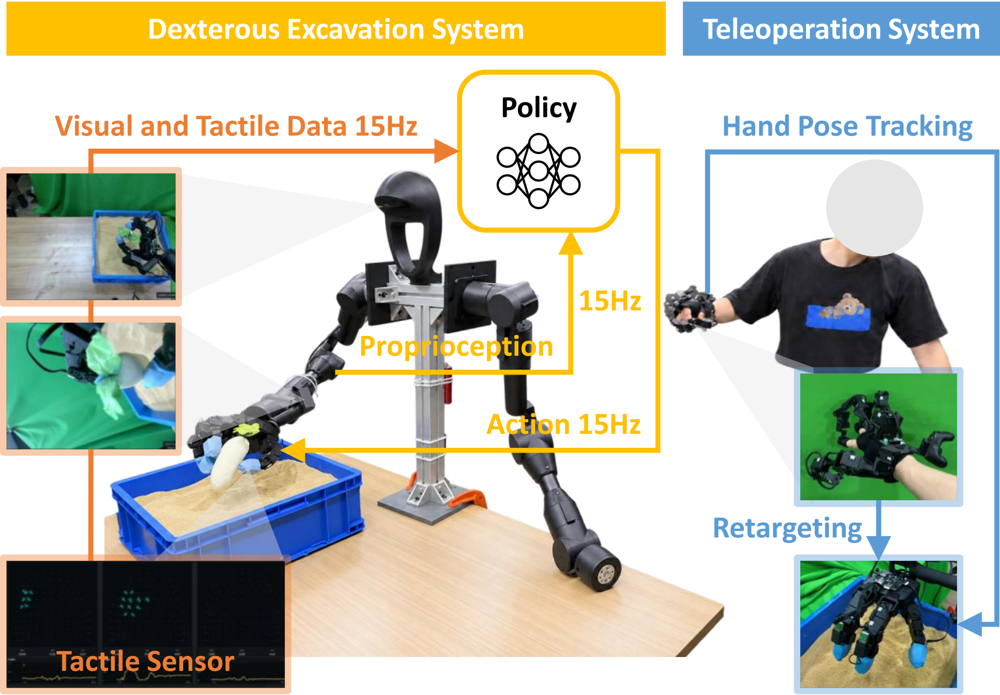
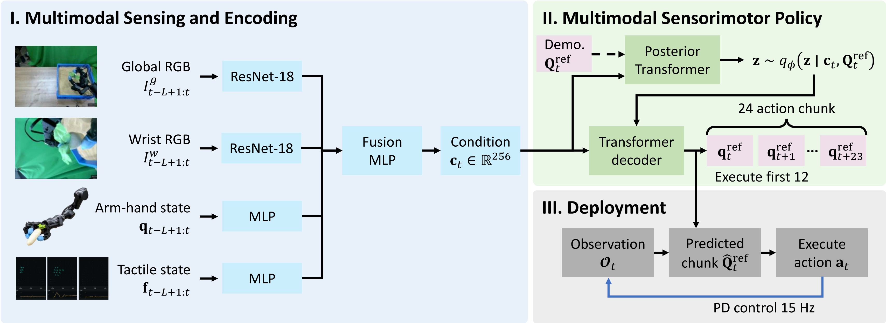
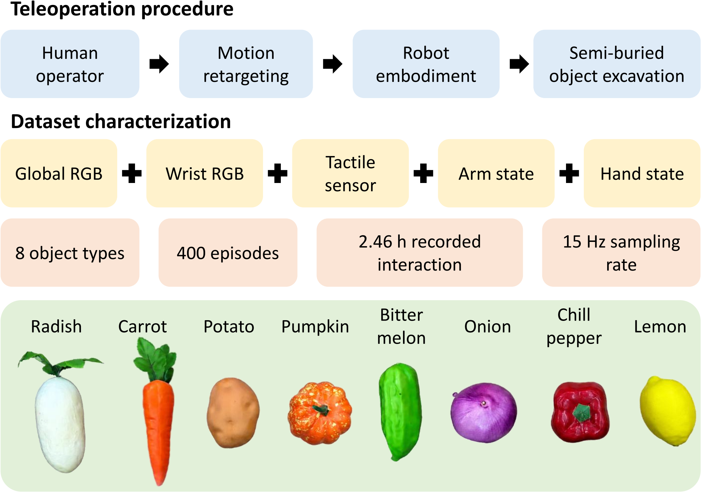
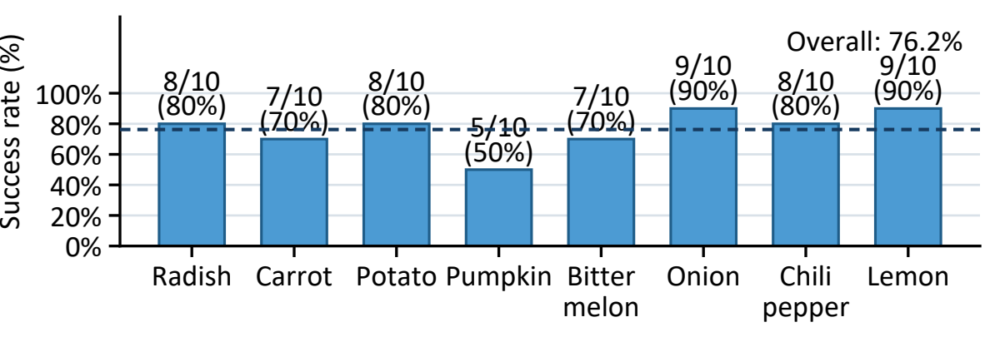
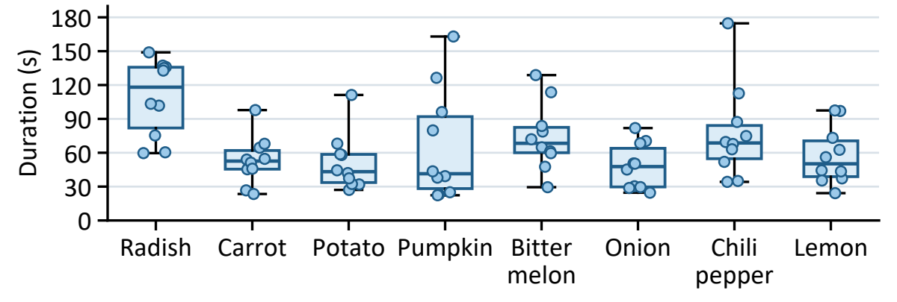

Excavating a semi-buried object requires coordinated arm-hand motion as contact continually changes the surrounding granular material and the exposed portion of the object. Vision captures the exposed geometry, while tactile feedback combined with arm–hand proprioception helps interpret contacts hidden from view. Prior work has explored tactile localization and manipulation in granular media, but learning coordinated arm–hand policies for semi-buried object excavation remains underexplored. To address this gap, we present DexCav, a multimodal sensorimotor policy for dexterous excavation, together with a synchronized teleoperation dataset comprising 400 demonstrations across eight object types. The dataset records dual-view RGB images, arm–hand proprioception, tactile measurements, glove commands, and tracker poses on a common 15 Hz timeline. Built on the Action Chunking Transformer, the policy combines visual, proprioceptive, and tactile observations to predict a 24-step sequence of arm–hand joint configurations, executing the first 12 steps before replanning. In real-robot evaluation, 61 of 80 monitored trials across the eight object types were recorded as successful, yielding a success rate of 76.25%. Qualitative deployments on six additional object types outside the training set illustrate the excavation behavior beyond the training categories.





Excavation success rates and trial durations across eight object types, with ten trials per type.
Author and venue information are withheld during double-blind review.
@misc{anonymous2027dexcav,
title = {DexCav: Dexterous exCavation of Semi-Buried Objects with Multimodal Sensorimotor Policy},
author = {Anonymous Authors},
year = {2027},
note = {Under double-blind review}
}